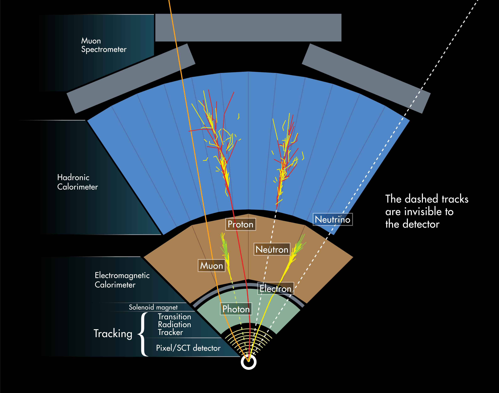
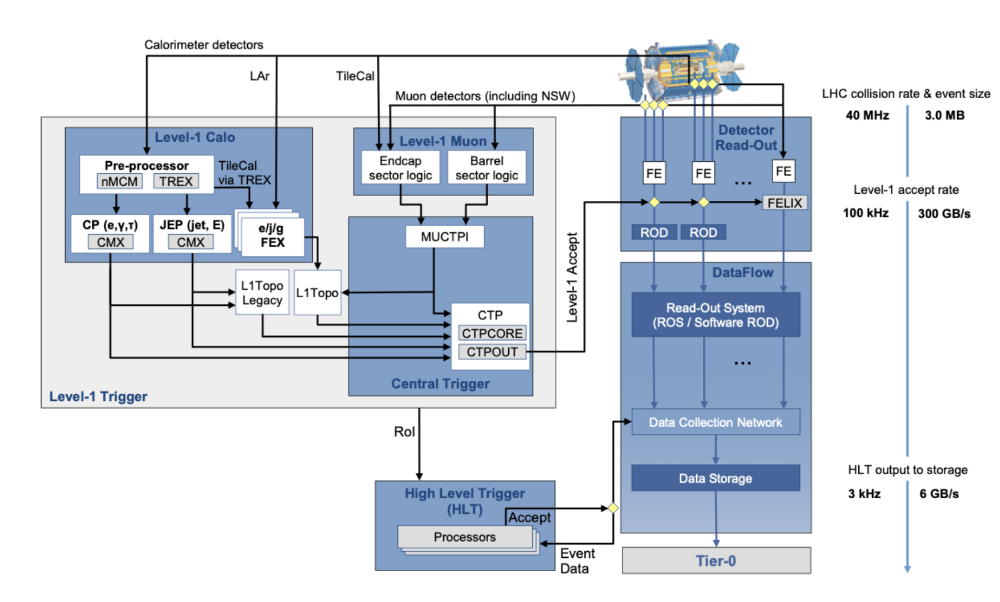
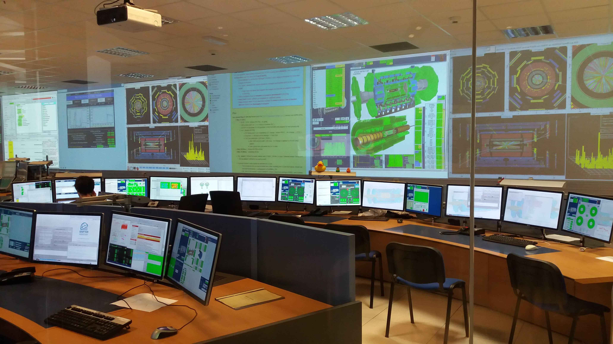
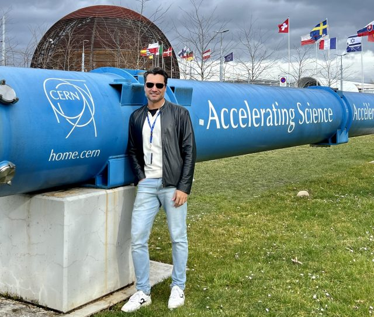
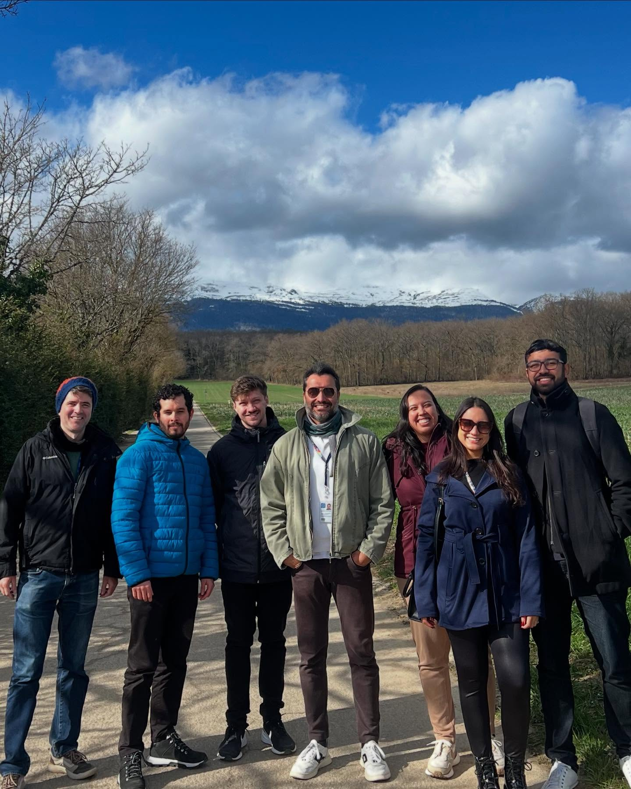
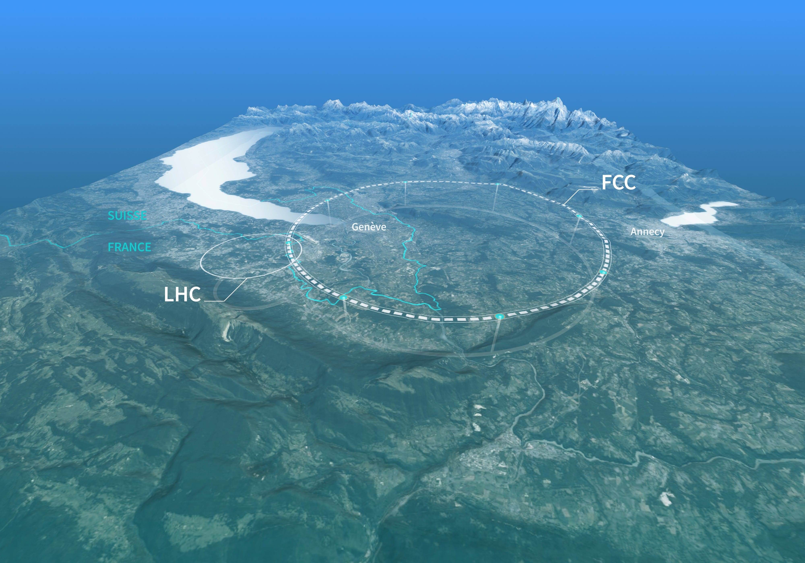

CERN & the ATLAS Experiment
The world's foremost particle physics laboratory and the experiment where NIPSCERN makes its scientific contributions — from calorimetry instrumentation to event visualisation.

What is CERN?
Founded on 29 September 1954, CERN — the European Organization for Nuclear Research (Conseil Européen pour la Recherche Nucléaire) — is the world's foremost laboratory for particle physics. Located at the Franco-Swiss border near Geneva, Switzerland, it hosts approximately 17,000 scientists and engineers from over 100 countries, with 23 member states contributing to its operation and scientific programme.
CERN's primary mission is to investigate the fundamental structure of matter by accelerating particles to extremely high energies and studying the results of their collisions. The organisation has produced a succession of increasingly powerful accelerators: the Synchrocyclotron (1957), the Proton Synchrotron (1959), the Super Proton Synchrotron (1976), the Large Electron–Positron Collider (LEP, 1989–2000), and the current flagship — the Large Hadron Collider (LHC, 2008–present).
Beyond particle physics, CERN is home to transformative technological contributions: Tim Berners-Lee invented the World Wide Web at CERN in 1989 as a means for scientists to share information; the GRID computing infrastructure pioneered distributed computing at petabyte scale; and CERN's accelerator technology underpins medical applications such as proton therapy for cancer treatment.
CH-1211 Genève 23


The Large Hadron Collider
The Large Hadron Collider (LHC) is the most complex scientific instrument ever built. A circular accelerator with a circumference of 27 kilometres, it is buried between 45 and 170 metres underground beneath the Swiss and French countryside near Geneva. At its core, two beams of protons — or heavy ions — travel in opposite directions in a near-perfect vacuum, guided by 1,232 superconducting dipole magnets cooled to −271.3 °C (1.9 K), colder than outer space, using superfluid helium.
Each proton beam carries an energy of up to 6.8 TeV (Run 3), for a combined centre-of-mass collision energy of 13.6 TeV — a record set in 2022. Proton bunches complete approximately 11,245 laps per second, close to 99.9999991% of the speed of light. At the four interaction points where the beams cross, the resulting collisions are detected by the major experiments: ATLAS, CMS, ALICE, and LHCb.
The LHC has operated across three physics runs: Run 1 (2010–2012, 7–8 TeV), during which the Higgs boson was discovered; Run 2 (2015–2018, 13 TeV), which collected approximately 150 fb⁻¹ of proton–proton collision data per experiment; and the ongoing Run 3 (2022–present, 13.6 TeV), targeting around 300 fb⁻¹. A major upgrade, the High-Luminosity LHC (HL-LHC), is scheduled to begin operation around 2029, increasing luminosity by a factor of five to ten.
| Parameter | Value |
|---|---|
| Circumference | 26,659 m (~27 km) |
| Tunnel depth | 45–170 m underground |
| Operating temperature | 1.9 K (−271.3 °C) |
| Peak collision energy | 13.6 TeV (Run 3) |
| Proton speed | 99.9999991% of c |
| Dipole magnets | 1,232 (NbTi superconducting, ~8.3 T) |
| Quadrupole magnets | 392 (beam focusing) |
| Beam crossing rate | 40 MHz (~25 ns between bunches) |
| Peak luminosity (Run 3) | 2 × 10³⁴ cm⁻² s⁻¹ |
| Interaction points | 4 (ATLAS, CMS, ALICE, LHCb) |


The Four Main LHC Experiments
| Experiment | Full Name | Physics Focus | Key Facts |
|---|---|---|---|
| ATLAS | A Toroidal LHC Apparatus | General-purpose: Higgs physics, BSM searches, top quark, B-physics, heavy ions | 46 m long · 25 m tall · 7,000 t · ~3,000 scientists from 182 institutions |
| CMS | Compact Muon Solenoid | General-purpose: complementary to ATLAS with different detector technology; co-discovered the Higgs in 2012 | 21 m long · 15 m tall · 14,000 t · 6 T solenoid — the strongest ever built |
| ALICE | A Large Ion Collider Experiment | Quark-gluon plasma (QGP) in Pb–Pb collisions, studying the state of matter microseconds after the Big Bang | 16 m long · 16 m tall · 10,000 t · 30+ participating countries |
| LHCb | Large Hadron Collider beauty | CP violation and matter–antimatter asymmetry via B-meson decays, rare decays of beauty and charm hadrons | 21 m long · 10 m tall · 5,600 t · forward spectrometer design |
Inside the ATLAS Detector
ATLAS is a cylindrical general-purpose detector 46 metres long and 25 metres in diameter, weighing 7,000 tonnes. It is structured as a series of concentric shells around the LHC beampipe, each designed to measure different particle properties. The detector is built around a solenoidal magnet (2 T) and a system of toroidal magnets, enabling precise momentum measurements.
The innermost subdetector tracks the trajectories of charged particles. It consists of three subsystems: the Insertable B-Layer (IBL) and Pixel Detector (closest to the beam), the Semiconductor Tracker (SCT, silicon microstrip layers), and the Transition Radiation Tracker (TRT, drift tubes). The Inner Detector operates within a 2 T solenoidal magnetic field and covers the pseudorapidity range |η| < 2.5.
Surrounding the solenoid, the Liquid Argon (LAr) electromagnetic calorimeter measures the energy of electrons and photons with fine granularity. Its accordion-shaped lead/stainless steel absorber structure, filled with liquid argon at 87 K, achieves an energy resolution of approximately σ_E/E ≈ 10%/√E ⊕ 0.7%. It covers |η| < 3.2 and also provides hadronic energy measurement in the forward region (|η| 3.1–4.9).
The CGV-WEB tool developed at NIPSCERN renders the LAr barrel geometry cell-by-cell, enabling direct visualisation of energy deposits in the accordion structure.
The Tile Calorimeter (TileCal) is a sampling hadronic calorimeter using scintillating tiles embedded in a steel absorber structure. It covers the central pseudorapidity region |η| < 1.7, segmented into three longitudinal layers and approximately 10,000 cells read out by photomultiplier tubes. Each cell is read out individually, producing analogue pulse signals digitised and processed by the trigger and data acquisition system (TDAQ). The energy resolution is approximately σ_E/E ≈ 50%/√E ⊕ 3%.
NIPSCERN direct contribution: The UFJF group participates in TileCal operations, calibration, and signal processing development. Research at NIPSCERN investigates Optimal Filtering (OF) algorithms implemented in FPGA fabric for the free-running trigger readout, a key challenge for the Phase-II ATLAS upgrade. The CGV-WEB visualiser represents TileCal geometry as three radial layers (A, BC, D) across 64 azimuthal sectors, totalling ~5,760 barrel cells.
The Hadronic Endcap Calorimeter complements TileCal in the forward region, covering 1.5 < |η| < 3.2. It consists of two independent wheels per endcap, each with two longitudinal sections, using copper absorber plates and liquid argon as active material. The HEC uses a parallel-plate geometry with 3 mm gaps, providing hadronic coverage with energy resolution σ_E/E ≈ 70%/√E ⊕ 6%.
The outermost and largest subsystem of ATLAS, the Muon Spectrometer (MS) measures the momentum of muons that traverse the calorimeters. It operates in the magnetic field of three large superconducting air-core toroidal magnets. The MS uses four detector technologies: Monitored Drift Tubes (MDT), Cathode Strip Chambers (CSC), Resistive Plate Chambers (RPC), and Thin Gap Chambers (TGC), covering the range |η| < 2.7.


Trigger & Data Acquisition
The LHC delivers proton bunch crossings at 40 MHz — 40 million collisions per second. ATLAS cannot read out and store every event: the raw data rate would reach approximately 60 petabytes per second. Instead, a multi-level trigger system selects only the most physically interesting events for permanent storage.
The hardware-based Level-1 (L1) trigger operates in real time within a fixed latency of 2.5 µs, using coarse-granularity information from the calorimeters and muon detectors to reduce the rate from 40 MHz to approximately 100 kHz. A software-based High-Level Trigger (HLT) running on a farm of approximately 40,000 CPU cores then reduces this to around 1 kHz — the events that are written to permanent storage for physics analysis.
For Run 3, ATLAS introduced a new all-hardware first-stage trigger (L0) and a free-running readout mode for TileCal, eliminating the fixed L1 latency for certain subsystems. This innovation — in which NIPSCERN research directly participates — allows continuous digitisation and buffering of signals, enabling more flexible and powerful triggering strategies for the Phase-II HL-LHC era.
| Stage | Rate (output) | Technology | Latency |
|---|---|---|---|
| LHC crossing rate | 40 MHz | — | 25 ns per bunch |
| L0 / L1 Trigger | ~100 kHz | FPGA hardware | ≤ 2.5 µs |
| High-Level Trigger | ~3 kHz | CPU farm (~40k cores) | O(200 ms) |
| Permanent storage | ~3 kHz | CERN tape archive | — |


NIPSCERN's Contribution to ATLAS
The UFJF group at NIPSCERN, led by Prof. Dr. Luciano Manhães de Andrade Filho, participates in the ATLAS Collaboration through three principal research lines:
CGV-WEB — Calorimeter Geometry Viewer
CGV-WEB (Calorimeter Geometry Viewer, Web Edition) is a browser-based 3D visualisation platform for ATLAS calorimeter event data. Developed at NIPSCERN, it renders the full TileCal, LAr, and HEC geometry cell-by-cell using Three.js and WebAssembly, allowing physicists worldwide to inspect collision events without installing specialised software. The platform is freely accessible at nipscern.com/projects/cgvweb.
FPGA-Based Signal Processing
A core research focus is the development of real-time digital signal processing algorithms for the TileCal readout electronics. NIPSCERN investigates advanced methods that can be implemented in FPGA fabric within the tight latency constraints of the free-running trigger architecture (Phase-II upgrade). This work bridges the gap between physical detector signal characteristics and the digital processing requirements of the new electronics.
SAPHO — Hardware Prototyping
The SAPHO processor ecosystem, developed entirely at NIPSCERN, provides an environment for rapid hardware prototyping and hardware–software co-design. SAPHO supports the development and validation of digital signal processing circuits intended for detector front-end electronics, making it a practical tool for ATLAS R&D work.
Data Analysis & Simulation
Members of NIPSCERN participate directly in ATLAS physics analyses and Monte Carlo simulation workflows, including calorimeter-level studies of jet energy calibration, signal shape modelling, and machine-learning-based event classification. Graduate and undergraduate students work alongside CERN scientists, including during extended visits to CERN in Geneva.


Key Milestones
Twelve European states ratify the convention establishing CERN. The first director-general is Felix Bloch.
UA1 and UA2 experiments at the SPS collider confirm the carriers of the weak force. Carlo Rubbia and Simon van der Meer awarded the Nobel Prize in Physics 1984.
Tim Berners-Lee proposes an information management system at CERN. The first web server and browser are developed at CERN.
The LEAR (Low Energy Antiproton Ring) experiment produces the first atoms of antihydrogen — the antimatter counterpart of the simplest atom.
The Large Hadron Collider circulates its first beam on 10 September 2008, beginning a new era of particle physics.
ATLAS and CMS jointly announce the observation of a new boson consistent with the Standard Model Higgs at 125 GeV on 4 July 2012. François Englert and Peter Higgs awarded the Nobel Prize in Physics 2013.
The LHC begins its third run at 13.6 TeV centre-of-mass energy, a new world record. NIPSCERN research contributes to the TileCal free-running trigger studies for the Phase-II upgrade.
The ATLAS Collaboration, including members of NIPSCERN, receives the 2025 Breakthrough Prize in Fundamental Physics, recognising decades of contributions to particle physics at the LHC.
The Future Circular Collider
CERN's boldest proposal for the post-LHC era — a 91-kilometre ring that will extend humanity's reach into fundamental physics by an order of magnitude.
What is the FCC?
The Future Circular Collider (FCC) is CERN's research initiative for the next generation of particle accelerators to succeed the LHC once it completes its High-Luminosity phase. The project is developing designs for a new circular tunnel with a circumference of 90.7 km — more than three times the LHC — buried between 180 and 400 metres underground, with eight surface sites (seven in France, one in Switzerland) and four experimental halls.
The FCC programme is structured in two complementary phases, reflecting a long-term vision for fundamental physics research spanning from the late 2040s into the second half of the 21st century:
Science Goals
The FCC addresses fundamental open questions arising from the Higgs boson discovery — including the precise nature of the Higgs field and its role in the evolution of the early universe, the origin of matter–antimatter asymmetry, and the identity of dark matter. With increased centre-of-mass energy, the FCC-hh would explore physics beyond the Standard Model at mass scales up to tens of TeV, far beyond the reach of any existing or planned collider.
The global FCC collaboration spans more than 140 institutes in more than 30 countries. A Feasibility Study report was released in 2025, and a decision by CERN Member States is expected in 2028, with construction potentially beginning in the early 2030s.
